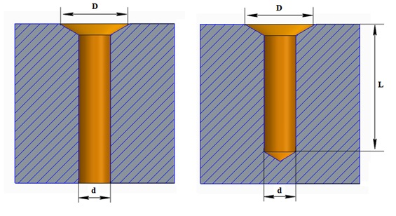

適切なパラメータを持つ皿穴は、ボルト、ピンなどの位置決めを容易にします。
皿穴は通常、皿ねじやリベットを取り付けるために使用されます。これらの皿穴は、標準的なボール盤やカウンタビットを用いて加工されます。適切な皿穴パラメータは、標準ねじやリベットを確実に固定するために必要です。
このルールでは、許容される皿穴パラメータを絶対値として指定するよう構成できます。

ここでは、
D = 皿穴直径
d = 穴直径
L = 穴深さ
ユーザーは、［インポート］ボタンを使用して、Excelシートテンプレートに含まれる大量のデータを取り込むことができます。
標準テンプレート形式：
d |
D |
L |
6 |
8.5 |
25 |
8 |
10 |
30 |
10 |
12.5 |
50 |
注記：
このルールは、アセンブリレベルの解析にも対応しています。
このルールは、DFMPro設定に基づき、トップレベルアセンブリ部品に対して実行できます。